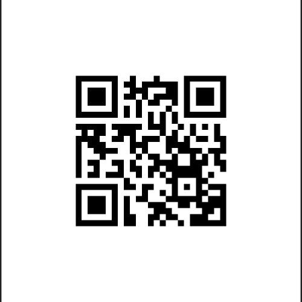

پروژه واقعی · کافه رایکا
منوی دیجیتال؛ بدون چاپ دوباره برای هر تغییر
رایکا کافهای تازهتأسیس بود که تغییرهای مداوم منوی کاغذی، آن را ناچار به چاپ مجدد میکرد. راهکار این پروژه، جایگزینی تجربه منوی کاغذی با منوی دیجیتال در دسترس از طریق QR بود.
مسئله چه بود؟
هر بار تغییر قیمت یا آیتم، به اصلاح و چاپ دوباره منو نیاز داشت؛ فرآیندی تکراری که بهروزرسانی منو را دشوار میکرد.
راهکار اجراشده
دسترسی به منوی دیجیتال رایکا از طریق QR
امکان مشاهده منو با بازکردن لینک در تلفن همراه
حذف نیاز به چاپ مجدد نسخه کاغذی برای هر تغییر منو
شرح بالا بر اساس توضیح کارفرماست؛ جزئیات فنی/خدمات دیگری به پروژه نسبت داده نشده است.
مسیر QR تا منوی واقعی
کد زیر همان تصویر QR ارائهشده در مخزن پروژه است. آن را با دوربین تلفن همراه اسکن کنید.

تصویر QR دریافتشده از مخزن پروژهطبق توضیح کارفرما، سایت تکصفحهای است و همین نشانی صفحه منو نیز محسوب میشود.
ارتباط با کافه رایکا
برای تماس مستقیم با کافه:
راهکار مشابه برای کسبوکار شما؟
برای بررسی نیاز کسبوکار و دریافت راهکار از تیم راژ، از مسیر ارتباطی رسمی استفاده کنید.